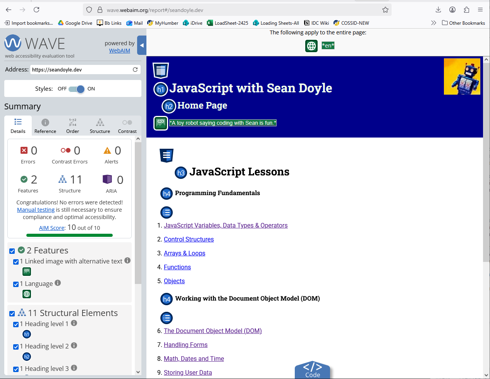

Coding for Accessibility
Coding for Accessibility

Our Responsibility
For web developers, accessibility should not be an afterthought or something applied when the primary coding has been completed, it needs to be baked in to every line of code from the beginning.
Fortunately, we have numerous tools at our disposal to help us find potential usability issues. One such tool is the Lighthouse tool embeded in Google Chrome “Dev” Tools. You can have this tool generate an accessibility report.
The Web Accessibility Evaluation Tool (WebAIM) is another useful resource for our toolbox.
